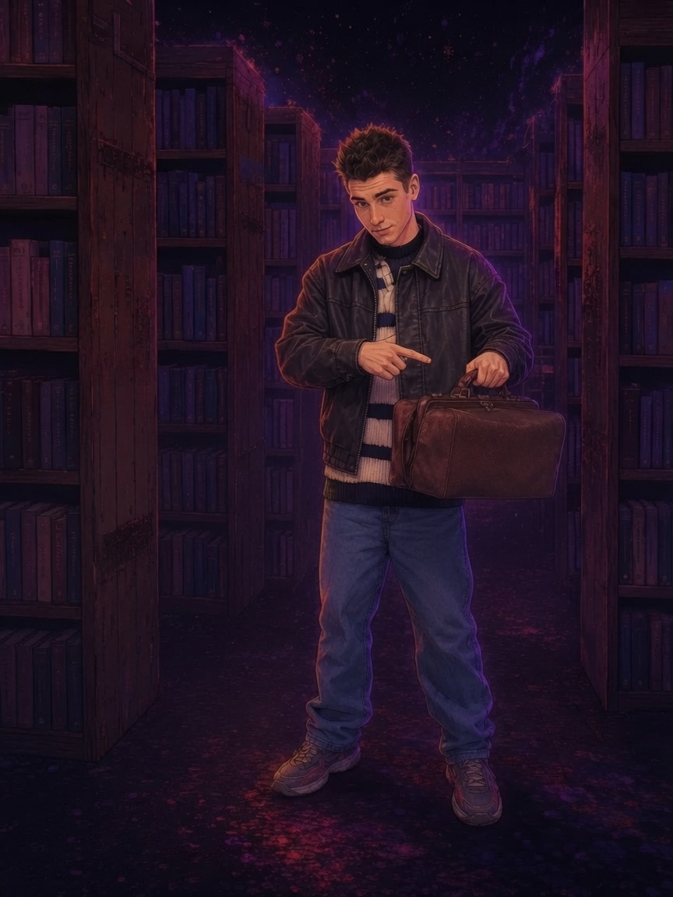

Единственное, что отличает тебя от опытного специалиста — качество и количество информации. Здесь собрано всё, чтобы закрыть этот разрыв.
Подать заявку на вступлениеИли напиши боту фразу «хочу найти ХохлоБарона», чтобы получить гостевой доступ.
В канале собраны тысячи медицинских книг — и умный ИИ-библиотекарь, который мгновенно находит нужное. Тебе не нужно знать названий. Не нужно понимать, с чего начать.
Спроси — и получи готовый маршрут за минуты, а не за дни скроллинга форумов.

Библиотека будет полезна любому, кто стремится понять свое тело, мышление, а затем и мир в целом. Медицина долго была закрытым клубом с непонятным языком — ХохлоБарон делает её доступной для каждого мыслящего человека.
Я не продаю курс «стань специалистом за месяц». Я сам нахожусь на пути — фиксирую всё, что реально работает, и всё, что оказалось пустой тратой времени.
В канале я думаю вслух: что читаю, что выбросил, что изменил в своём подходе. Наблюдать за чужими тупиками и открытиями в реальном времени — значит прогрессировать в десятки раз быстрее, чем в одиночку.
Ты тратишь энергию на поиск, а не на понимание.
Решение уже принято за тебя — остаётся только читать.
Тебе не нужно начинать с нуля — маршрут уже проложен, а база структурирована.
Библиотека живёт: слабые материалы вычищаются, сильные остаются и дополняются.
В связи с участившимися проверками платформ мы ограничиваем приём. Если ты готов — вся инструкция на странице.
Перейти к оформлениюЗащита доступа
В случае блокировок серверов все участники получают резервные инвайты. Твои данные и доступ к базе знаний не пропадут.